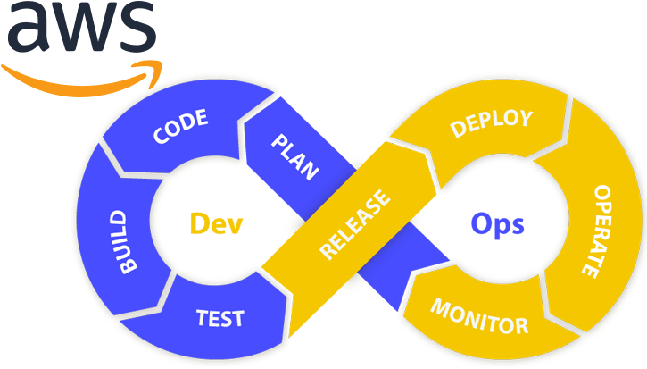
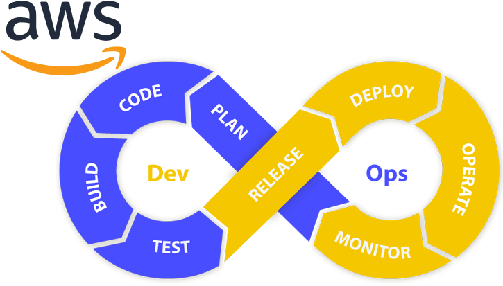
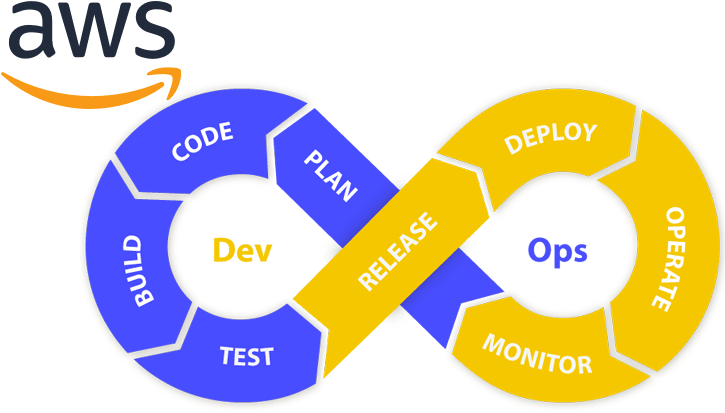

"Прогресс невозможен без изменений, и те, кто не может изменить свои взгляды, не могут изменить ничего."
"Нам не нужна магия, чтобы изменить наш мир. Мы уже несем в себе всю необходимую силу."
"То, что вы делаете, имеет значение, и вам нужно решить, какого рода изменение вы хотите внести."

Инфраструктура как код
Инструменты CI/CD, контейнеры, управление конфигурацией, оркестрация контейнеров, предоставление инфраструктуры.
Инструменты для мониторинга программного обеспечения и инфраструктуры (мониторинг инфраструктуры и приложений), управление журналами.
КОНТЕЙНЕРЫ
Самый популярный движок - Docker, используемый для создания контейнеров.
ВЕБ-СТРАНИЦЫ
- Docker: с точки зрения начинающего
Рекомендуется к прочтению, чтобы иметь представление о том, что такое контейнер. Второй шаг - попробовать создать какой-то образ Docker, создать учетную запись на Docker Hub.
Инструменты CI/CD
Популярные инструменты для CI - GitHub Actions, GitLab CI, BitBucket
Популярные инструменты для CD (непрерывной поставки/развертывания) - Jenkins, GitLab, AWS CodeDeploy, TeamCity